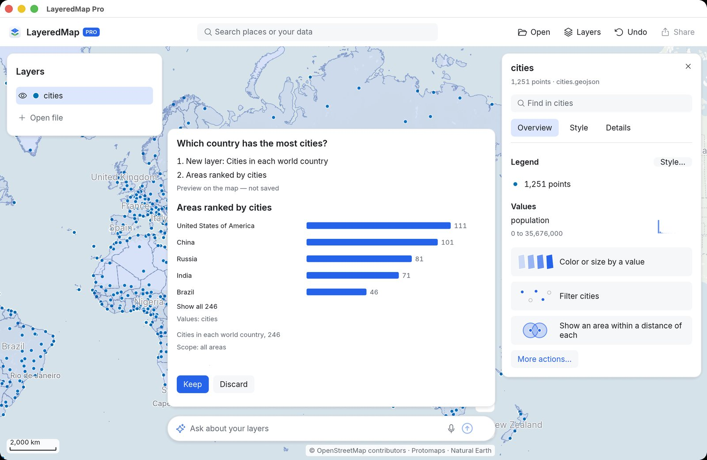

태풍과 허리케인
NOAA의 IBTrACS 아카이브에서 가져온, 모든 바다에 걸친 1980년 이후의 폭풍 경로 4,999개. 하이옌을 찾고, 풍속에 따라 경로를 색칠하고, 가장 강력한 폭풍이 어디서 일어나는지 보세요.
IBTrACS v04r01 · 1980–2026호기심 많은 사람을 위한 지도 앱
NimbleMap은 지도를 좋아하지만 GIS를 써 본 적 없는 사람을 위한 앱입니다. 장소, 경로, 기후 데이터가 담긴 파일을 더블클릭하면 지도에 나타납니다. 장소나 피처를 클릭하면 무엇이 흥미로운지 알려 줍니다. 가장 강력한 폭풍, 가장 큰 성곽 도시, 가장 더운 한 주처럼요.
무료 · macOS · 영어 인터페이스, 중국어 지명 지원

1900년 이후의 대지진, 규모별 색칠
무엇이 다른가
QGIS와 ArcGIS는 공간 데이터를 다루는 강력한 도구입니다. 하지만 처음 여는 사람에게는 간단한 지도 하나 만드는 것조차 어려울 수 있습니다. 사용자와 지도 사이에 수백 가지 도구와 설정이 가로막고 있기 때문입니다. iPhone을 만든 사람들이 GIS를 설계했다면 어떤 모습일까요? 어떤 도구는 남기고, 어떤 도구는 숨기고, 어떤 도구는 아예 없앨까요? NimbleMap은 이 생각을 탐구합니다. GIS의 쓸모 있는 부분을, 장소에 호기심이 있는 사람이라면 누구나 쓸 수 있는 지도 앱에 담았습니다.
대부분의 GIS 소프트웨어는 도구에서 시작합니다. NimbleMap은 질문에서 시작합니다. 지도에서 무언가를 클릭하면 그것이 무엇이고 같은 레이어의 나머지와 비교해 어떤지 알려 줍니다.
모든 숫자는 화면에 보이는 부분만이 아니라 데이터 전체에서 나옵니다. 지도에 놓을 수 없는 레코드가 있으면 몇 개이고 왜 그런지 알려 줍니다. 원본 파일은 바뀌지 않습니다.
모든 단계를 되돌릴 수 있습니다. 모든 결과에는 그것이 어떻게 만들어졌는지 쉬운 말로 적은 설명도 함께 붙습니다.
NimbleMap은 독립 프로젝트이며, Apple, Esri, QGIS 프로젝트와 관련이 없습니다.
작동 방식
NimbleMap의 지도는 배경 지도 위에 기름종이처럼 쌓인 레이어로 이루어집니다. 파일을 열면 새 레이어가 됩니다. 설정 마법사도, 만들어야 할 프로젝트도, 헤매야 할 빈 도구 상자도 없습니다.

좌표가 있는 CSV, GeoJSON, Shapefile, GeoPackage, GeoTIFF, NetCDF 기후 파일을 끌어다 놓으세요. 어떤 열에 좌표가 들었는지처럼 NimbleMap이 무언가를 가정해야 할 때는 무엇을 가정했는지 알려 주고 바꿀 수 있게 해 줍니다.

도시, 폭풍, 기후 격자의 셀 하나를 클릭하세요. NimbleMap은 먼저 그것이 무엇이고 같은 레이어의 나머지와 비교해 어떤지 보여 줍니다. “4,999개 중 가장 높음”이나 “나머지의 80%보다 낮음”처럼요. 관련 도구는 필요할 때 나타납니다.

값에 따라 지도를 색칠하고, 데이터를 필터링하고, 결과를 이미지로 내보내세요. 제목, 범례, 축척 막대, 출처를 넣을 수 있습니다. 발표 슬라이드, A4 페이지, 정사각형 게시물에 맞는 크기를 고르세요.
기본 제공 예제
NimbleMap에는 예제 데이터 여덟 가지가 들어 있으며, Examples(예제)에서 클릭 한 번으로 열 수 있습니다. 몇 가지를 소개합니다.
NOAA의 IBTrACS 아카이브에서 가져온, 모든 바다에 걸친 1980년 이후의 폭풍 경로 4,999개. 하이옌을 찾고, 풍속에 따라 경로를 색칠하고, 가장 강력한 폭풍이 어디서 일어나는지 보세요.
IBTrACS v04r01 · 1980–2026
수도, 현성, 만주족 주둔지를 포함한 청나라 말기 중국의 성벽 1,789곳. 위성 영상 위에 그려서 이 도시들이 어디에 있었는지 보세요.
Xue et al. 2021 · CC BY 4.0
NetCDF 기후 파일에 담긴 2023년 6~8월 전 세계의 일별 폭염 강도. 시간 슬라이더를 움직이거나 재생을 눌러 여름 동안 폭염이 어떻게 생겨나고 옮겨 갔는지 보세요.
Copernicus GDO (JRC) · CC BY 4.0그 밖에도 1900년 이후의 대지진, 화산, 공항, 발전소, 세계의 도시·국가·고도 데이터가 들어 있습니다.
무료와 Pro
무료 버전으로 공간 데이터를 열고, 겹쳐 보고, 꾸미고, 공유할 수 있습니다. NimbleMap Pro에는 지도 레이어에 대해 평범한 말로 질문할 수 있는 어시스턴트가 더해집니다.
무료 다운로드
무료 버전의 모든 기능에 더해:

다운로드
NimbleMap은 macOS 13 이상을 실행하는 Apple 실리콘 Mac에서 무료로 쓸 수 있습니다. Shapefile, GeoJSON, CSV, GeoTIFF 등 지원하는 파일을 더블클릭하면 지도에 열립니다. 파일은 Mac 안에 남습니다. Windows 버전도 준비 중입니다.
NimbleMap은 RustGIS를 기반으로 만들어졌습니다.